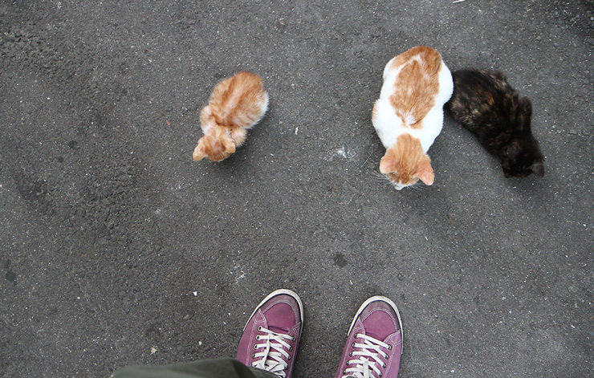
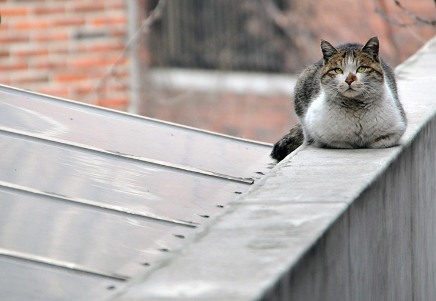
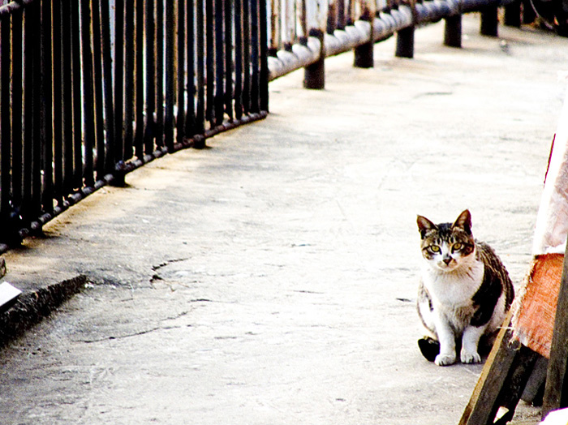

Skip to content
This repository
Search
Pull requests
Issues
Gist
@mamazz
Unwatch 1
Star 0
Fork 0 mamazz/mamazz.github.io
Code Issues 0 Pull requests 0 Wiki Pulse Graphs Settings
Branch: master Find file Copy pathmamazz.github.io/hobby.html
054045f 30 minutes ago
@mamazz mamazz 123
1 contributor
RawBlameHistory 146 lines (123 sloc) 3.08 KB
윤상운
길냥이랑 놀기



